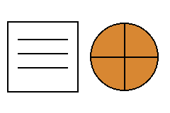

About me
I study computer science at UC San Diego. My interests include data analysis, web development, and basketball.

Connecting basketball and data
Watching basketball raises questions that highlights alone cannot answer. How should workload be measured? Does a missed game actually indicate an injury? Working on an NBA study helped me see why defining a variable carefully matters as much as plotting it.
The project used True Shooting Percentage as one measure of efficiency. A crucial lesson was to distinguish an observed association from a causal explanation.
What I am developing
- Reading and interpreting data-analysis notebooks.
- Communicating research questions and limitations.
- Building websites with meaningful HTML structure.
- Collaborating and coordinating work in a team.
Outside coursework
I enjoy basketball and strength training. Basketball also motivates my interest in comparing performance using evidence rather than a single highlight or statistic.
What comes next
I am continuing to develop a portfolio of coursework and projects that explains both what was built and what I learned.
Get in touch